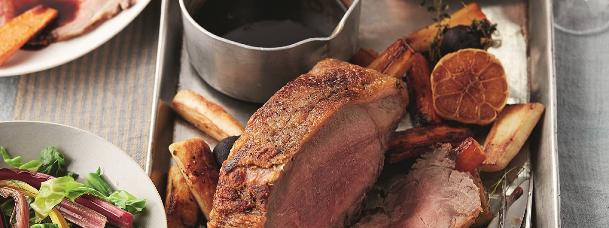

Roast Beef with Caramelised Onion Gravy

Entree Description
A weekend wouldn’t feel like a proper weekend without a really good roast lunch, and roast beef is our absolute favourite. Serves 6-8 people.
Required Ingredients
- 1 head of garlic (about 12 cloves), cut in half
- 5 thyme sprigs, leaves picked, plus 1 extra
- 1.8kg beef sirloin
- 3-4 tbsp olive oil
- 4 large onions, sliced
- 150g plain flour
- 500ml red wine
- 1.5 litres hot beef stock
Steps and Cooking Instructions
- Rub the garlic halves and thyme leaves all over the beef. Place the joint in a large dish, drizzle over the olive oil, then rub it into the meat all over. Cover and leave to marinate in the fridge for 1–2 days before you cook it (you don’t have to marinate the beef in advance, but it does make it super tasty! – see Tip). Take the beef out of the fridge about an hour before cooking, to let it come up to room temperature.
- Preheat the oven to 190°C/170°C fan/Gas 5.
- Preheat a dry frying pan until very hot, then sear the beef over a high heat until it’s coloured on all sides. Place the beef in a large, hob-proof roasting tray with the garlic halves and the thyme sprig and roast for about 45 minutes for medium rare (or until it reaches 45–47°C in the centre, if you have a meat thermometer). Add 10–12 minutes for medium (or until it reaches 55–60°C in the centre), or add about 20 minutes if you like it well done (or until it reaches 65–70°C in the centre).
- Transfer the beef to a warm platter, cover loosely with foil and leave to rest for at least 20 minutes, and anything up to 40 minutes, before serving.
- Meanwhile, to make the gravy, place the roasting tray over a low heat on the hob, add the onions to the juices in the tray and cook gently for about 20 minutes, stirring occasionally, until really soft and caramelised. Stir in the flour until combined, then whisk in the red wine, making sure there are no lumps. Bring to the boil, whisking, then bubble rapidly until the red wine has reduced by half. Stir in the hot stock, then cook over a medium heat for about 8 minutes, stirring occasionally, until reduced to a thick gravy.
- Carve the beef thinly and pour the gravy into a warm jug. Serve with Yorkshire Puddings and steamed chard.